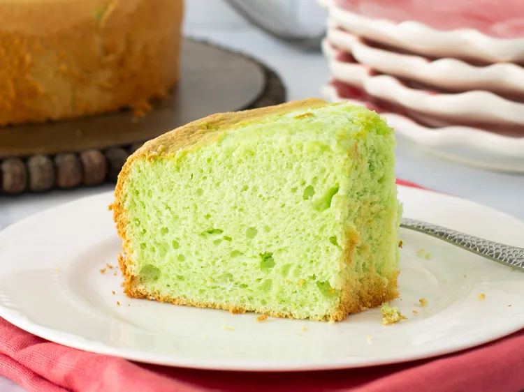

Home
Kue Pandan

Description
This is a recipe to make an Indonesian Cake called Kue Pandan.
Ingridients
- 6 large eggs, separated
- ¼ teaspoon cream of tartar
- ½ cup white sugar
- ½ cup water
- ¼ teaspoon pandan paste
- 5 tablespoons corn oil
- 1 cup self-rising flour, sifted
Steps
- Gather all ingredients. Preheat the oven to 325 degrees F (165 degrees C).
- Beat egg whites and cream of tartar in the bowl of a stand mixer fitted with the whisk attachment until stiff peaks form; set aside.
- Beat egg yolks and sugar together in a separate bowl until sugar dissolves.
- Whisk water and pandan paste together in a separate bowl until smooth; stir into egg yolk mixture. Stir in oil; fold in flour.
- Gently fold egg yolk-pandan mixture into egg whites with a spatula; pour into a 9-inch chiffon cake mold.
- Bake in the preheated oven until a toothpick inserted into center comes out clean, 45 to 50 minutes.
- Cool cake in the pan, inverted onto a wire rack. Run a sharp knife around edges to loosen cooled cake from the mold, invert carefully onto a serving plate.